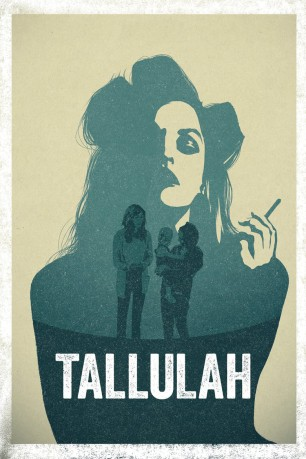
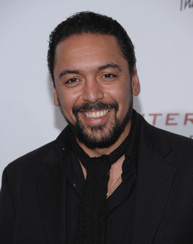

#9652 Tallulah
 
 IMDB-Wertung: 6.7 / 10
IMDB-Wertung: 6.7 / 10  Tomatometer: 85
Tomatometer: 85  Metascore: 0
Metascore: 0 
Beverly Hills: Eine junge Frau namens Tallulah rettet ein Baby vor dessen nachlässig-sorglosen Mutter Carolyn. Die unbefriedigte Hausfrau, die in ihrer Not keine Betreuerin für ihr Baby finden kann, vertraut ihr Kind spontan der völlig Fremden an, handelt sich damit allerdings mehr ein, als zunächst beabsichtigt. Tallulah gibt infolgedessen nämlich vor, dass das Kind ihr selbst gehört.Unterstützung bei ihrer ausufernden Fürsorge erhält die Babysitterin dabei von der Mutter ihres Ex-Freundes. Als jeder annimmt, dass das kleine Mädchen entführt wurde, geben die zwei es ihrer richtigen Mutter zurück, woraufhin sich zwischen den drei Frauen ein unerwartet enges Band formt.
Jahr: 2016
Dauer: 111 Minuten
FSK: 12
Land: USA Studio: NetflixTonspuren: - , - , - , - , - ,
Untertitel: Deutsch, Englisch,
Auflösung: 1080p (1920x1080) Größe: 4659 MB
Genre: Drama, Komödie, Liebe
Regisseur: Sian Heder
Drehbuch: Sian Heder
Soundtrack: Michael Brook
Darsteller:
 Ellen Page als Tallulah
Ellen Page als Tallulah Allison Janney als Margo
Allison Janney als Margo Tammy Blanchard als Carolyn
Tammy Blanchard als Carolyn- Evan Jonigkeit als Nico
-  Felix Solis als Manuel
 David Zayas als Detective Richards
David Zayas als Detective Richards Uzo Aduba als Detective Kinnie
Uzo Aduba als Detective Kinnie Fredric Lehne als Russell
Fredric Lehne als Russell- Evangeline Ellis als Madison
- Liliana Ellis als Madison
 John Benjamin Hickey als Stephen
John Benjamin Hickey als Stephen Zachary Quinto als Andreas
Zachary Quinto als Andreas Maddie Corman als Vera
Maddie Corman als Vera- Eden Marryshow als Officer Lacey
- Oberon K.A. Adjepong als Cab Driver
- Tommar Wilson als Concierge
- J. Oscar Simmons als Valet
 Charlotte Ubben als Grad Student
Charlotte Ubben als Grad Student Tijuana Ricks als MTA Guard
Tijuana Ricks als MTA Guard- Jason Tottenham als Michael
- Mansoor Najee-ullah als Skinny Man
- Todd Alan Crain als Newscaster
- Chanel Jenkins als ER Receptionist
- Stacey Thunder als Reporter
- Jasson Finney als Bargoer
- Berto Colon als Officer Buck
- Nimo Gandhi als Street Vendor (scenes deleted)
- John Druzba als Nurse (uncredited)
 Doris McCarthy als Park Lady (uncredited)
Doris McCarthy als Park Lady (uncredited)- Danny Wolohan als Big Jay (uncredited)
- Olivia Levine als Grad Student 2
- Rachel Hardin als Shopper with Baby
- Helen Kowidge als Additional Baby
- Olivia Mertz als Additional Baby
- Almadera Idelia Galko-Castellano als Additional Baby
- Aniko Newsom als Additional Baby
- Drew Gregory als Dive Bartender (uncredited)
- Devinron Ready als Homeless Man (uncredited)
- Frankie Verroca als ER Old Patient (uncredited)
Datei: X:\2016(N-Z)\Tallulah (2016, FSK12, 1920x1080).mkv seit 01.10.2018
Festplatte: HD 2016(A-Z)
 Es gibt insgesamt 182 Filme in der Gruppe '2016(N-Z)'
Es gibt insgesamt 182 Filme in der Gruppe '2016(N-Z)'